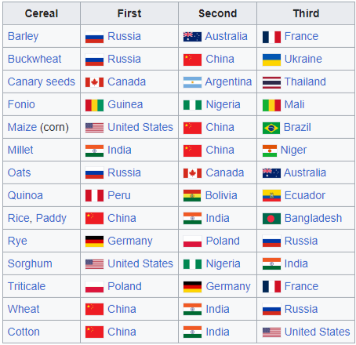

I was walking the other day and came across this
It looks like you've found a fire hydrant that has been whimsically decorated to resemble a turkey, complete with a tail, wings, and a face. It's a fun and festive alteration that seems to be in the spirit of Thanksgiving. This kind of community art can bring smiles to passersby and add a touch of whimsy to everyday objects.
What can you tell me about this?

The image you provided appears to be a table listing various cereals and cotton along with the top three producing countries for each. The countries are indicated by their national flags and are ranked first, second, and third. Here's a summary of the information:
- Barley: Top producers are Russia, Australia, and France.
- Buckwheat: Russia, China, and Ukraine are the leading producers.
- Canary seeds: Canada is the top producer, followed by Argentina and Thailand.
- Fonio: Guinea, Nigeria, and Mali are the main producers.
- Maize (corn): The United States leads in production, with China and Brazil following.
- Millet: India, China, and Niger are the top producers.
- Oats: Russia, Canada, and Australia are the leading producers.
- Quinoa: Peru, Bolivia, and Ecuador are the top producing countries.
- Rice, Paddy: China, India, and Bangladesh are the biggest producers.
- Rye: Germany, Poland, and Russia are the main producers.
- Sorghum: The United States, Nigeria, and India are the top producers.
- Triticale: Poland, Germany, and France are leading in production.
- Wheat: China, India, and Russia are the top producers.
- Cotton: China, India, and the United States are the leading producers.
This table is likely used to quickly convey information about global agricultural production and can serve various purposes such as economic analysis, educational purposes, or to inform investment decisions in the agriculture sector. It shows the global distribution of cereal and cotton production and indicates which countries might be most influential in the market for these commodities.
can you return your bullet point analysis in a format that I can load into excel? tab or comma delimited is fine.
I have saved the data as a comma-separated values (CSV) file, which you can load into Excel. You can download it using the link below:
Download the CSV file